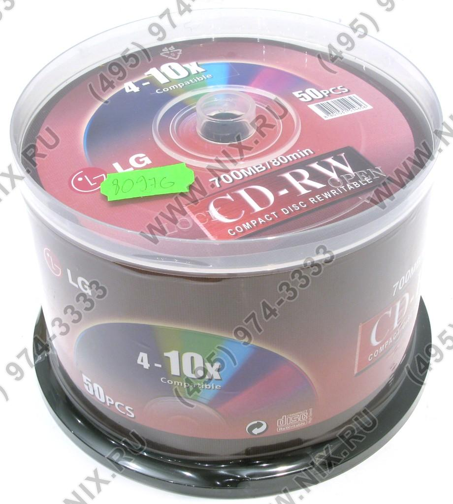
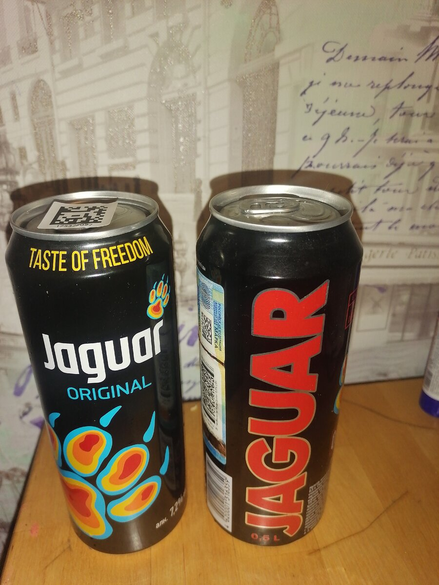
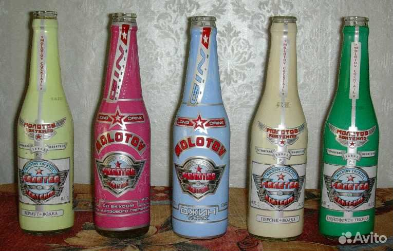
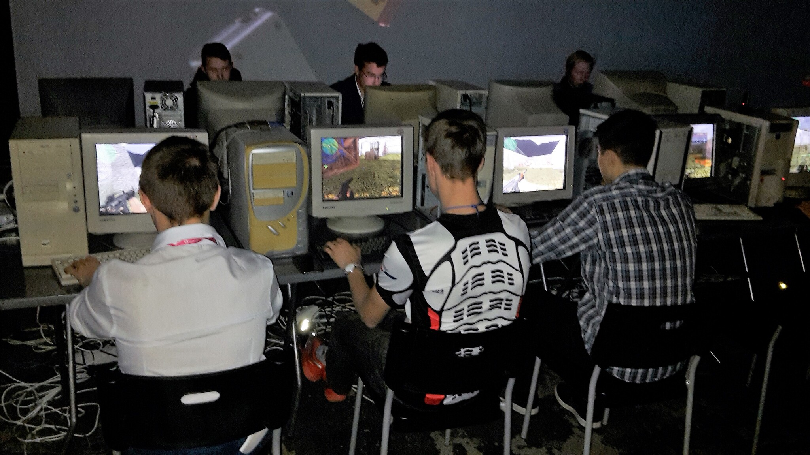
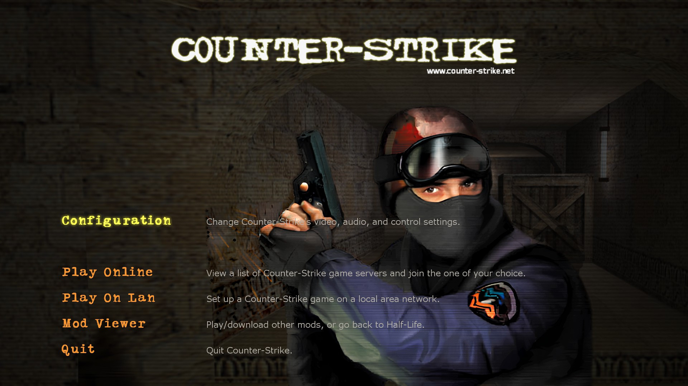
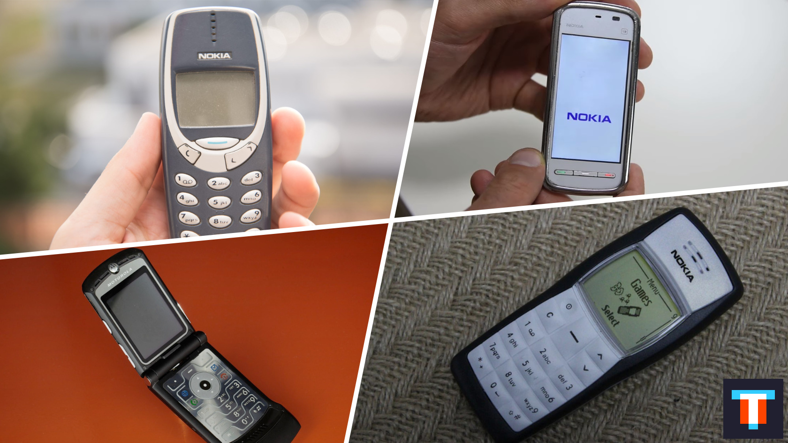
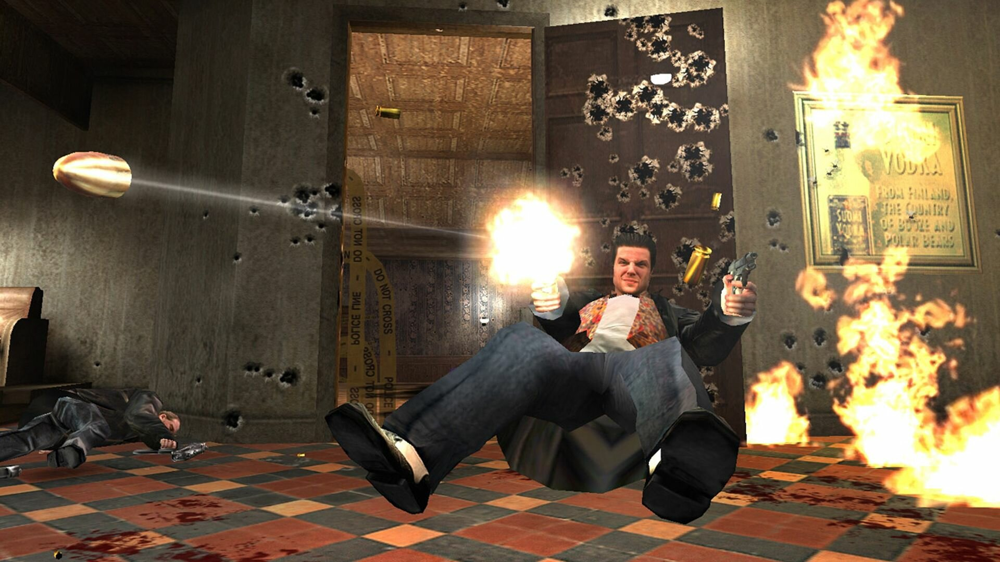
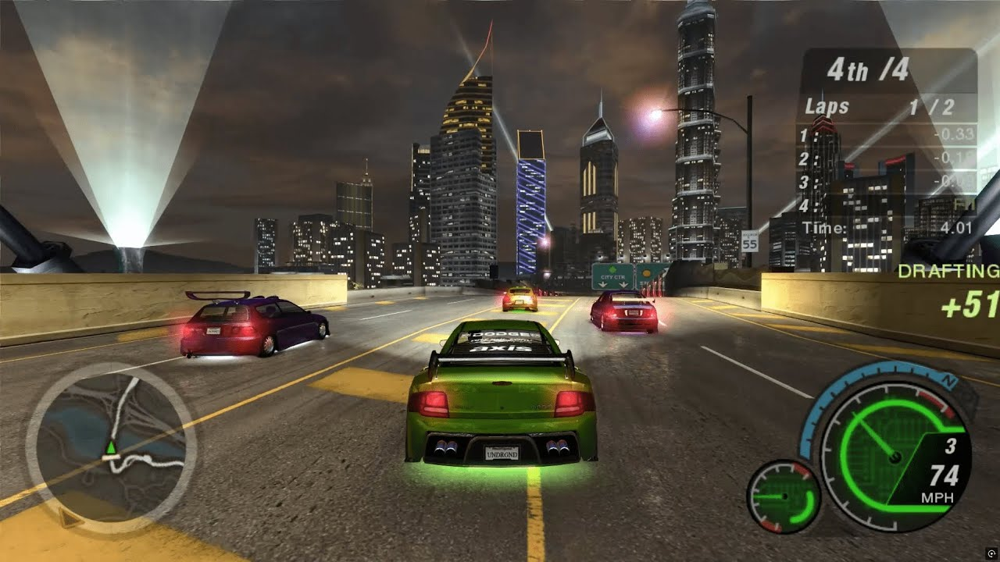
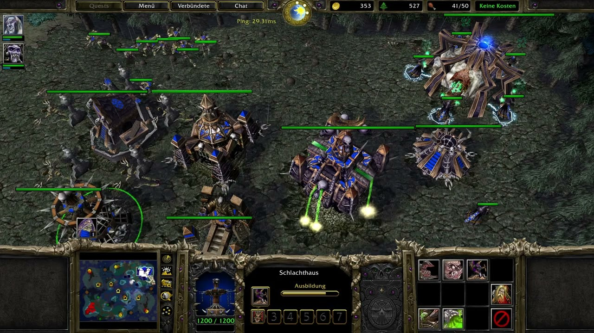
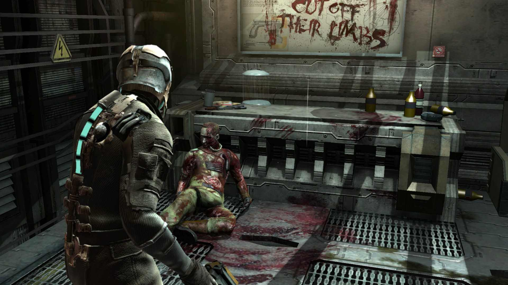

System: соединение установлено...
Потому что это был последний момент, когда интернет ещё ощущался местом, а не бесконечной лентой. Тогда всё это казалось обычной жизнью. Теперь это уже цифровая археология. 2007 — не просто год. Это точка памяти, в которой у целого поколения осталось слишком много жизни.
Когда последняя ячейка захлопнется, новые записи закроются. Архив останется в сети на 10 лет в режиме только чтения.
Занятые светятся. Свободные можно выбрать. Красивые номера подсвечены отдельно.
Маркером подписанные диски, сборники “Всё нужное”, драйвера, игры, клипы, обложки из ларька и вечный вопрос: “У тебя Nero есть?”

Не глянцевая реконструкция, а настоящая память: CRT-мониторы, пластиковые наушники, провода под ногами, очередь на de_dust2 и админ за стойкой.


Ну вы поняли: кто в теме — тот помнит. Пусть просто лежат здесь, как реквизит той ночи)))


Ночной общий чат: четыре ника, короткие реплики, паузы и то самое ожидание, когда строка «печатает...» значит больше самого сообщения.
Nokia, Motorola, Siemens — без сенсоров, без GPS, без вайфая. Только звонки, SMS и змейка на пару часов.

Теперь плеер живёт: в строке идёт только текущий трек, playlist кликается, кнопки переключают треки, а прогресс можно перематывать.
CS 1.6, NFS Underground, Warcraft III, Max Payne, Dead Space 2 — не список игр, а карта вечеров, когда интернет казался больше мира.




Тап/клик запускает звук, QIP и ночной режим терминала.